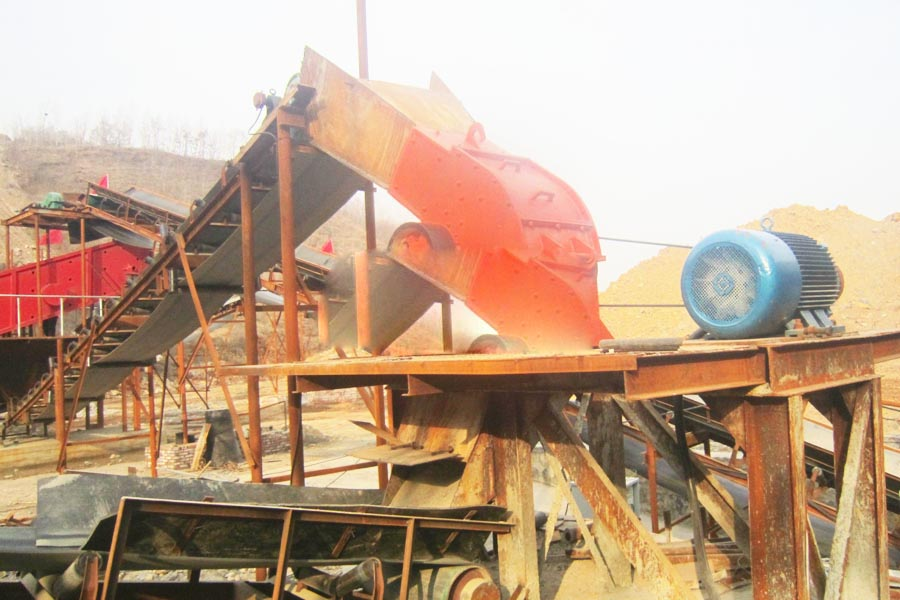

- Home >
- stone crusher >
- used small hammer crusher

Construction waste crushing production line

Mobile construction waste crushing station for urban construction waste crushing.
used small hammer crusher
used small hammer crusher Introduction
Hammer crusher is directly 600-1800 mm maximum particle size of the material crushed to a period of 25 or 25 mm below the crusher with a crusher. Hammer crusher is suitable for cement, chemicals, power, metallurgy and other industrial sectors crushing medium hardness material, such as limestone, slag, coke, coal and other materials in the debris, crushing operations. Hammer crusher is divided into: single-stage hammer crusher, high efficiency hammer crusher, sand machine, vertical shaft hammer crusher, reversible hammer crusher. Since the hammer crusher has compact structure, reasonable layout, easy installation, maintenance, good, easy to operate. Especially great for the cement production process layout flexibility. Saving process layout space; has a special structure that is characteristic of the material crushed “big break than the” other characteristics. So dressing and apply more sand industry.

Hammer crusher main purposes
Hammer crusher for crushing all kinds of hard and abrasive weak materials. The compressive strength of the material does not exceed 100MPa, moisture content less than 15%. Material to be broken coal, salt, chalk, gypsum, brick, limestone. Also for crushing fiber structure, strong flexibility and toughness of broken wood, paper or broken asbestos cement waste to recover asbestos fibers and so on. In addition, hammer crusher not only can be used for crushing production line, sand production line, but also can replace the cone crusher in beneficiation production line. The main working parts of hammer crusher rotor with a hammer (also known as hammer) is. Rotor from the spindle, disk, pin and hammer components. The motor drives the rotor in the crushing cavity high-speed rotation. Material from the upper mouth to feed into the machine, hit, impact, shear, abrasive and high-speed movement of the hammer and crushed. In the lower part of the rotor, with sieve, sieve size less than the crushed material of grain size is discharged through the sieve, sieve size larger than the coarse sieve retention continue to be a hammer blow and grinding, and finally through the sieve from the plane.
Hammer Crusher technical parameters
| Category | Model Specifications |
Feeding size (MM) |
The particle size (MM) |
Production capacity (M3/H) |
Motor | Weight(T) |
Dimensions (Long× width× height)(MM) |
|
| Poles | Power(KW) | |||||||
|
Hammer Crusher |
PCΦ400×300 | ≤200 | ≤25 | 5-10 | 4 | 11 | 0.8 | 900×670×860 |
| PCΦ600×400 | ≤250 | ≤30 | 10-22 | 4 | 22 | 2.26 | 1200×1050×1200 | |
| PCΦ800×600 | ≤250 | ≤35 | 18-40 | 4 | 55 | 4.8 | 1310×1180×1310 | |
| PCΦ1000×800 | ≤350 | ≤35 | 25-50 | 4 | 75 | 5.9 | 1600×1390×1575 | |
| PCΦ1000×1000 | ≤350 | ≤35 | 30-55 | 6 | 132 | 8 | 1800×1590×1775 | |
| PCΦ1250×1250 | ≤350 | ≤35 | 35-65 | 6 | 180 | 14 | 2060×1600×1890 | |
| PCΦ1400×1400 | ≤350 | ≤35 | 50-100 | 6 | 280 | 32 | 2365×1870×2220 | |
| PCΦ1600×1600 | ≤350 | ≤35 | 100-150 | 8 | 480 | 37.5 | 3050×2850×2800 | |

Hammer crusher works
Hammer crusher mainly by the impact of action to crush the material. Crushing process roughly like this, the material into the crusher, hammer suffered the impact of the high-speed rotation and broken, broken material, obtained from the kinetic energy of the hammer from high speed toward the frame body baffle, screen bar, while material impact each other, were repeatedly broken, the screen is smaller than the gap of the material strip, discharged from the gap, the larger the individual materials in the screen bars again after the impact hammer, grinding, squeezing and crushing, the material is extruded from the gap in the hammer. to obtain the product desired particle size.
Hammer crusher maintenance
Symptom: the particle size is too large.
Reasons: 1) hammer wear too much; 2) screen bar fracture. Remedy: 1) replace the hammer; 2) Replace the screen bars.
Symptom: bearing overheating.
Reasons: 1) insufficient grease; and 2) excessive grease; 3) grease contamination deterioration; 4) bearing damage. Remedy: 1) to add the amount of grease; and 2) bearing greases should its space volume of 50%. 3) Clean bearing, replace the grease. 4) Replace the bearing.
Symptom: Flexible couplings produce percussion sound.
Reasons: 1) pin loose; 2) elastic ring wear; Remedy: 1) Stop and tighten the nut pin; 2) replace the elastic ring.
Symptom: percussion sound generated inside the machine.
Reasons: 1) non-broken material into the interior of the machine; 2) liner slack fasteners, hammer impact on the liner; and 3) a hammer or other parts breakage. Imported pump valves Remedy 1) parking, clean up the crushing chamber; gap 2) Check the liner and fastening strip between hammer and screen; 3) the replacement of broken parts.
Leave Me A Message, Now
If you have any questions regarding equipment prices, production line configuration or other problems, you can send a message to us, we will contact you soon.